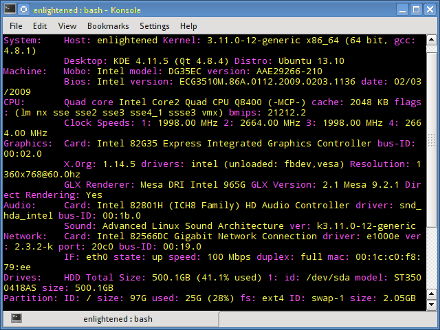

DIAGNOZ_PC
16 команд для проверки в Linux аппаратной части компьютера
16 команд для проверки аппаратной части компьютера в Linux
Оригинал: 16 commands to check hardware information on Linux
Автор: Silver Moon
Дата публикации: Apr 8, 2014
Перевод: Н.Ромоданов
Дата перевода: август 2014 г.
Информация о комплектации компьютера
Точно также, как для всего прочего, в вашей системе Linux есть много команд для получения информацию об аппаратной части вашего компьютера. Некоторые команды сообщают информацию только о конкретных компонентах оборудования, например, процессоре или памяти, а другие — выдают информацию сразу о нескольких устройствах.
В данной статье кратко рассказывается о нескольких наиболее часто используемых командах, предназначенных для получения информации и особенностях настройки различных периферийных устройств и компонентах компьютера. Среди рассматриваемых — команды lscpu, hwinfo, lshw, dmidecode, lspci и другие.
1. lscpu
Команда lscpu выдает информацию о процессоре и его составляющих. В ней нет каких-либо дополнительных параметров или функциональных возможностей.
Architecture: x86_64
CPU op-mode(s): 32-bit, 64-bit
Byte Order: Little Endian
CPU(s): 4
On-line CPU(s) list: 0-3
Thread(s) per core: 1
Core(s) per socket: 4
Socket(s): 1
NUMA node(s): 1
Vendor ID: GenuineIntel
CPU family: 6
Model: 23
Stepping: 10
CPU MHz: 1998.000
BogoMIPS: 5302.48
Virtualization: VT-x
L1d cache: 32K
L1i cache: 32K
L2 cache: 2048K
NUMA node0 CPU(s): 0-3
2. lshw – список аппаратных устройств
Утилита общего назначения, которая сообщает подробную и краткую информацию о нескольких различных аппаратных устройствах, таких как процессор, память, диск, контроллеры usb, сетевые адаптеры и т.д. Команда lscpu извлекает информацию из различных файлов /proc.
$ sudo lshw -short
H/W path Device Class Description
===================================================
system ()
/0 bus DG35EC
/0/0 processor Intel(R) Core(TM)2 Quad CPU Q8400 @ 2.66GHz
/0/0/1 memory 2MiB L2 cache
/0/0/3 memory 32KiB L1 cache
/0/2 memory 32KiB L1 cache
/0/4 memory 64KiB BIOS
/0/14 memory 8GiB System Memory
/0/14/0 memory 2GiB DIMM DDR2 Synchronous 667 MHz (1.5 ns)
/0/14/1 memory 2GiB DIMM DDR2 Synchronous 667 MHz (1.5 ns)
/0/14/2 memory 2GiB DIMM DDR2 Synchronous 667 MHz (1.5 ns)
/0/14/3 memory 2GiB DIMM DDR2 Synchronous 667 MHz (1.5 ns)
/0/100 bridge 82G35 Express DRAM Controller
/0/100/2 display 82G35 Express Integrated Graphics Controller
/0/100/2.1 display 82G35 Express Integrated Graphics Controller
/0/100/19 eth0 network 82566DC Gigabit Network Connection
/0/100/1a bus 82801H (ICH8 Family) USB UHCI Controller #4
/0/100/1a.1 bus 82801H (ICH8 Family) USB UHCI Controller #5
/0/100/1a.7 bus 82801H (ICH8 Family) USB2 EHCI Controller #2
/0/100/1b multimedia 82801H (ICH8 Family) HD Audio Controller
/0/100/1c bridge 82801H (ICH8 Family) PCI Express Port 1
/0/100/1c.1 bridge 82801H (ICH8 Family) PCI Express Port 2
/0/100/1c.2 bridge 82801H (ICH8 Family) PCI Express Port 3
/0/100/1c.2/0 storage JMB368 IDE controller
/0/100/1d bus 82801H (ICH8 Family) USB UHCI Controller #1
/0/100/1d.1 bus 82801H (ICH8 Family) USB UHCI Controller #2
/0/100/1d.2 bus 82801H (ICH8 Family) USB UHCI Controller #3
/0/100/1d.7 bus 82801H (ICH8 Family) USB2 EHCI Controller #1
/0/100/1e bridge 82801 PCI Bridge
/0/100/1e/5 bus FW322/323 [TrueFire] 1394a Controller
/0/100/1f bridge 82801HB/HR (ICH8/R) LPC Interface Controller
/0/100/1f.2 storage 82801H (ICH8 Family) 4 port SATA Controller [IDE mode]
/0/100/1f.3 bus 82801H (ICH8 Family) SMBus Controller
/0/100/1f.5 storage 82801HR/HO/HH (ICH8R/DO/DH) 2 port SATA Controller [IDE m
/0/1 scsi3 storage
/0/1/0.0.0 /dev/sda disk 500GB ST3500418AS
/0/1/0.0.0/1 /dev/sda1 volume 70GiB Windows NTFS volume
/0/1/0.0.0/2 /dev/sda2 volume 395GiB Extended partition
/0/1/0.0.0/2/5 /dev/sda5 volume 97GiB HPFS/NTFS partition
/0/1/0.0.0/2/6 /dev/sda6 volume 97GiB Linux filesystem partition
/0/1/0.0.0/2/7 /dev/sda7 volume 1952MiB Linux swap / Solaris partition
/0/1/0.0.0/2/8 /dev/sda8 volume 198GiB Linux filesystem partition
/0/3 scsi4 storage
/0/3/0.0.0 /dev/cdrom disk DVD RW DRU-190A
Если вы хотите больше узнать о команде lshw, то обратите внимание на пост Получаем интфомацию в Linux об аппаратных частях компьютера с помощью команды lshw.
3. hwinfo – информация об аппаратуре компьютера
Утилита hwinfo является еще одной универсальной утилитой зондирования аппаратуры, которая может сообщить подробную и краткую информацию о многих различных аппаратных компонентах, причем может сообщить больше, чем утилита lshw.
$ hwinfo --short
cpu:
Intel(R) Core(TM)2 Quad CPU Q8400 @ 2.66GHz, 2000 MHz
Intel(R) Core(TM)2 Quad CPU Q8400 @ 2.66GHz, 2000 MHz
Intel(R) Core(TM)2 Quad CPU Q8400 @ 2.66GHz, 2666 MHz
Intel(R) Core(TM)2 Quad CPU Q8400 @ 2.66GHz, 2666 MHz
keyboard:
/dev/input/event2 AT Translated Set 2 keyboard
mouse:
/dev/input/mice Microsoft Basic Optical Mouse v2.0
graphics card:
Intel 965G-1
Intel 82G35 Express Integrated Graphics Controller
sound:
Intel 82801H (ICH8 Family) HD Audio Controller
storage:
Intel 82801H (ICH8 Family) 4 port SATA IDE Controller
Intel 82801H (ICH8 Family) 2 port SATA IDE Controller
JMicron JMB368 IDE controller
network:
eth0 Intel 82566DC Gigabit Network Connection
network interface:
eth0 Ethernet network interface
lo Loopback network interface
disk:
/dev/sda ST3500418AS
partition:
/dev/sda1 Partition
/dev/sda2 Partition
/dev/sda5 Partition
/dev/sda6 Partition
/dev/sda7 Partition
/dev/sda8 Partition
cdrom:
/dev/sr0 SONY DVD RW DRU-190A
usb controller:
Intel 82801H (ICH8 Family) USB UHCI Controller #4
Intel 82801H (ICH8 Family) USB UHCI Controller #5
Intel 82801H (ICH8 Family) USB2 EHCI Controller #2
Intel 82801H (ICH8 Family) USB UHCI Controller #1
Intel 82801H (ICH8 Family) USB UHCI Controller #2
Intel 82801H (ICH8 Family) USB UHCI Controller #3
Intel 82801H (ICH8 Family) USB2 EHCI Controller #1
bios:
BIOS
... СОКРАЩЕНО ...
Смотрите предыдущий пост об утилите hwinfo - Проверка информации об аппаратных средствах в Linux с помощью команды hwinfo.
4. lspci – список устройств PCI
Команда lspci выдает список всех шин PCI, а также подробную информация об устройствах, которые к ним подключены. Под эту категорию подпадают следующие устройства — адаптер vga, графическая карта, сетевой адаптер, порты usb, контроллеры sata и т.д.
$ lspci
00:00.0 Host bridge: Intel Corporation 82G35 Express DRAM Controller (rev 03)
00:02.0 VGA compatible controller: Intel Corporation 82G35 Express Integrated Graphics Controller (rev 03)
00:02.1 Display controller: Intel Corporation 82G35 Express Integrated Graphics Controller (rev 03)
00:19.0 Ethernet controller: Intel Corporation 82566DC Gigabit Network Connection (rev 02)
00:1a.0 USB controller: Intel Corporation 82801H (ICH8 Family) USB UHCI Controller #4 (rev 02)
00:1a.1 USB controller: Intel Corporation 82801H (ICH8 Family) USB UHCI Controller #5 (rev 02)
00:1a.7 USB controller: Intel Corporation 82801H (ICH8 Family) USB2 EHCI Controller #2 (rev 02)
00:1b.0 Audio device: Intel Corporation 82801H (ICH8 Family) HD Audio Controller (rev 02)
00:1c.0 PCI bridge: Intel Corporation 82801H (ICH8 Family) PCI Express Port 1 (rev 02)
00:1c.1 PCI bridge: Intel Corporation 82801H (ICH8 Family) PCI Express Port 2 (rev 02)
00:1c.2 PCI bridge: Intel Corporation 82801H (ICH8 Family) PCI Express Port 3 (rev 02)
00:1d.0 USB controller: Intel Corporation 82801H (ICH8 Family) USB UHCI Controller #1 (rev 02)
00:1d.1 USB controller: Intel Corporation 82801H (ICH8 Family) USB UHCI Controller #2 (rev 02)
00:1d.2 USB controller: Intel Corporation 82801H (ICH8 Family) USB UHCI Controller #3 (rev 02)
00:1d.7 USB controller: Intel Corporation 82801H (ICH8 Family) USB2 EHCI Controller #1 (rev 02)
00:1e.0 PCI bridge: Intel Corporation 82801 PCI Bridge (rev f2)
00:1f.0 ISA bridge: Intel Corporation 82801HB/HR (ICH8/R) LPC Interface Controller (rev 02)
00:1f.2 IDE interface: Intel Corporation 82801H (ICH8 Family) 4 port SATA Controller [IDE mode] (rev 02)
00:1f.3 SMBus: Intel Corporation 82801H (ICH8 Family) SMBus Controller (rev 02)
00:1f.5 IDE interface: Intel Corporation 82801HR/HO/HH (ICH8R/DO/DH) 2 port SATA Controller [IDE mode] (rev 02)
03:00.0 IDE interface: JMicron Technology Corp. JMB368 IDE controller
04:05.0 FireWire (IEEE 1394): LSI Corporation FW322/323 [TrueFire] 1394a Controller (rev 70)
Отфильтруйте информацию о конкретном устройстве с помощью команды grep.
$ lspci -v | grep "VGA" -A 12
5. lsscsi — список устройств scsi
Выдается список устройств scsi/sata, например, жестких дисков и оптических приводов.
$ lsscsi
[3:0:0:0] disk ATA ST3500418AS CC38 /dev/sda
[4:0:0:0] cd/dvd SONY DVD RW DRU-190A 1.63 /dev/sr0
6. lsusb – подробный список шин и устройств usb
Эта команда показывает информацию о контроллерах usb и подробные сведения о подключенных к ним устройствах. По умолчанию выдается краткая информация. Для того, чтобы о каждом порте usb получить подробную информацию, используйте параметр "-v".
$ lsusb
Bus 002 Device 001: ID 1d6b:0002 Linux Foundation 2.0 root hub
Bus 007 Device 001: ID 1d6b:0001 Linux Foundation 1.1 root hub
Bus 006 Device 001: ID 1d6b:0001 Linux Foundation 1.1 root hub
Bus 005 Device 002: ID 045e:00cb Microsoft Corp. Basic Optical Mouse v2.0
Bus 005 Device 001: ID 1d6b:0001 Linux Foundation 1.1 root hub
Bus 001 Device 001: ID 1d6b:0002 Linux Foundation 2.0 root hub
Bus 004 Device 001: ID 1d6b:0001 Linux Foundation 1.1 root hub
Bus 003 Device 001: ID 1d6b:0001 Linux Foundation 1.1 root hub
В системе, информация о которой приведена выше, один порт usb используется для подключения мыши.
7. Inxi
Inxi является мега скриптом bash, состоящим из 10000 строк кода, с помощью которого из разных источников и команд системы будет получена подробная информация об аппаратном обеспечении и будет создан отчет в виде, позволяющим его читать пользователям, которые не являются техническими специалистами.
$ inxi -Fx
8. lsblk — список блочных устройств
Перечисляется информация о всех блочных устройствах, которыми являются разделы жестких дисков и других устройств хранения данных, например, оптических приводов и флэш-накопителей
$ lsblk
NAME MAJ:MIN RM SIZE RO TYPE MOUNTPOINT
sda 8:0 0 465.8G 0 disk
├─sda1 8:1 0 70G 0 part
├─sda2 8:2 0 1K 0 part
├─sda5 8:5 0 97.7G 0 part /media/4668484A68483B47
├─sda6 8:6 0 97.7G 0 part /
├─sda7 8:7 0 1.9G 0 part [SWAP]
└─sda8 8:8 0 198.5G 0 part /media/13f35f59-f023-4d98-b06f-9dfaebefd6c1
sr0 11:0 1 1024M 0 rom
9. df – дисковое пространство файловых систем
Отчеты о различных разделах, об их точках монтирования и о том, сколько в каждом разделе есть свободного места.
$ df -H
Filesystem Size Used Avail Use% Mounted on
/dev/sda6 104G 26G 73G 26% /
none 4.1k 0 4.1k 0% /sys/fs/cgroup
udev 4.2G 4.1k 4.2G 1% /dev
tmpfs 837M 1.6M 835M 1% /run
none 5.3M 0 5.3M 0% /run/lock
none 4.2G 13M 4.2G 1% /run/shm
none 105M 21k 105M 1% /run/user
/dev/sda8 210G 149G 51G 75% /media/13f35f59-f023-4d98-b06f-9dfaebefd6c1
/dev/sda5 105G 31G 75G 30% /media/4668484A68483B47
10. Pydf – команда df, написанная на языке Python
Улучшенный вариант команды df , написанной на языке python, который выдает информацию в цвете, что выглядит лучше, чем информация, выдаваемая командой df
$ pydf
Filesystem Size Used Avail Use% Mounted on
/dev/sda6 96G 23G 68G 24.4 [#.....] /
/dev/sda8 195G 138G 47G 70.6 [####..] /media/13f35f59-f023-4d98-b06f-9dfaebefd6c1
/dev/sda5 98G 28G 69G 29.2 [##....] /media/4668484A68483B47
11. fdisk
Fdisk является утилитой, предназначенной для изменения разделов жестких дисков, и ей также можно пользоваться для получения информации о списке имеющихся разделов.
$ sudo fdisk -l
Disk /dev/sda: 500.1 GB, 500107862016 bytes
255 heads, 63 sectors/track, 60801 cylinders, total 976773168 sectors
Units = sectors of 1 * 512 = 512 bytes
Sector size (logical/physical): 512 bytes / 512 bytes
I/O size (minimum/optimal): 512 bytes / 512 bytes
Disk identifier: 0x30093008
Device Boot Start End Blocks Id System
/dev/sda1 * 63 146801969 73400953+ 7 HPFS/NTFS/exFAT
/dev/sda2 146802031 976771071 414984520+ f W95 Ext'd (LBA)
/dev/sda5 146802033 351614654 102406311 7 HPFS/NTFS/exFAT
/dev/sda6 351614718 556427339 102406311 83 Linux
/dev/sda7 556429312 560427007 1998848 82 Linux swap / Solaris
/dev/sda8 560429056 976771071 208171008 83 Linux
12. mount
Команда mount используется для монтирования/демонтирования, а также для просмотра смонтированных файловых систем.
$ mount | column -t
/dev/sda6 on / type ext4 (rw,errors=remount-ro)
proc on /proc type proc (rw,noexec,nosuid,nodev)
sysfs on /sys type sysfs (rw,noexec,nosuid,nodev)
none on /sys/fs/cgroup type tmpfs (rw)
none on /sys/fs/fuse/connections type fusectl (rw)
none on /sys/kernel/debug type debugfs (rw)
none on /sys/kernel/security type securityfs (rw)
udev on /dev type devtmpfs (rw,mode=0755)
devpts on /dev/pts type devpts (rw,noexec,nosuid,gid=5,mode=0620)
tmpfs on /run type tmpfs (rw,noexec,nosuid,size=10%,mode=0755)
none on /run/lock type tmpfs (rw,noexec,nosuid,nodev,size=5242880)
none on /run/shm type tmpfs (rw,nosuid,nodev)
none on /run/user type tmpfs (rw,noexec,nosuid,nodev,size=104857600,mode=0755)
none on /sys/fs/pstore type pstore (rw)
/dev/sda8 on /media/13f35f59-f023-4d98-b06f-9dfaebefd6c1 type ext4 (rw,nosuid,nodev,errors=remount-ro)
/dev/sda5 on /media/4668484A68483B47 type fuseblk (rw,nosuid,nodev,allow_other,blksize=4096)
binfmt_misc on /proc/sys/fs/binfmt_misc type binfmt_misc (rw,noexec,nosuid,nodev)
systemd on /sys/fs/cgroup/systemd type cgroup (rw,noexec,nosuid,nodev,none,name=systemd)
gvfsd-fuse on /run/user/1000/gvfs type fuse.gvfsd-fuse (rw,nosuid,nodev,user=enlightened)
Опять же, используйте команду grep для отфильтровывания информации только о тех файловых системах, которые вам интересны
$ mount | column -t | grep ext
13. free – проверка оперативной памяти
С помощью команды free проверьте объем используемой, свободной и общий объема оперативной памяти, имеющейся в системе.
free -m
total used free shared buffers cached
Mem: 7975 5865 2110 0 24 622
-/+ buffers/cache: 5218 2757
Swap: 1951 921 1030
14. dmidecode
Команда dmidecode отличается от всех других команд. Она извлекает информацию об оборудовании, читая для этого данные из структур данных SMBOIS (которые также называются таблицами DMI).
# display information about the processor/cpu
$ sudo dmidecode -t processor
# memory/ram information
$ sudo dmidecode -t memory
# bios details
$ sudo dmidecode -t bios
Подробности смотрите на странице man.
15. Файлы /proc
Во многих виртуальных файлах каталога /proc содержится информация об аппаратном обеспечении и о конфигурациях. Ниже приведены некоторые из них.
Информация о процессоре/памяти
# cpu information
$ cat /proc/cpuinfo
# memory information
$ cat /proc/meminfo
Информация о Linux/ядре
$ cat /proc/version
Linux version 3.11.0-12-generic (buildd@allspice) (gcc version 4.8.1 (Ubuntu/Linaro 4.8.1-10ubuntu7) ) #19-Ubuntu SMP Wed Oct 9 16:20:46 UTC 2013
Устройства SCSI/Sata
$ cat /proc/scsi/scsi
Attached devices:
Host: scsi3 Channel: 00 Id: 00 Lun: 00
Vendor: ATA Model: ST3500418AS Rev: CC38
Type: Direct-Access ANSI SCSI revision: 05
Host: scsi4 Channel: 00 Id: 00 Lun: 00
Vendor: SONY Model: DVD RW DRU-190A Rev: 1.63
Type: CD-ROM ANSI SCSI revision: 05
Разделы дисков
$ cat /proc/partitions
major minor #blocks name
8 0 488386584 sda
8 1 73400953 sda1
8 2 1 sda2
8 5 102406311 sda5
8 6 102406311 sda6
8 7 1998848 sda7
8 8 208171008 sda8
11 0 1048575 sr0
16. hdparm
Команда hdparm получает информацию об устройствах sata, например, жестких дисков.
$ sudo hdparm -i /dev/sda
/dev/sda:
Model=ST3500418AS, FwRev=CC38, SerialNo=9VMJXV1N
Config={ HardSect NotMFM HdSw>15uSec Fixed DTR>10Mbs RotSpdTol>.5% }
RawCHS=16383/16/63, TrkSize=0, SectSize=0, ECCbytes=4
BuffType=unknown, BuffSize=16384kB, MaxMultSect=16, MultSect=16
CurCHS=16383/16/63, CurSects=16514064, LBA=yes, LBAsects=976773168
IORDY=on/off, tPIO={min:120,w/IORDY:120}, tDMA={min:120,rec:120}
PIO modes: pio0 pio1 pio2 pio3 pio4
DMA modes: mdma0 mdma1 mdma2
UDMA modes: udma0 udma1 udma2 udma3 udma4 udma5 *udma6
AdvancedPM=no WriteCache=enabled
Drive conforms to: unknown: ATA/ATAPI-4,5,6,7
* signifies the current active mode
Заключение
В каждой из команд используется чуть-чуть иной способ извлечения информации, и вам для, чтобы получить определенную информацию об оборудовании, возможно, потребуется попробовать более одной команды. Но все они есть в большинстве дистрибутивов Linux и их легко можно установить из репозиториев, используемых по умолчанию.
Для тех, кто не хочет запоминать и вводить команды, на рабочем столе есть графические инструментальные средства. Hardinfo и I-nex — некоторые из популярных инструментальных средств, с помощью которых можно получить подробную информацию о большом количестве различных аппаратных компонентов.
Если вам понравилась статья, поделитесь ею с друзьями: